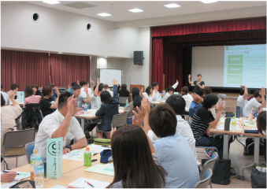
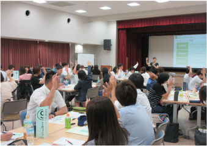

アンガーマネジメントで
働き方改革
棚多 里美
キャリアフォーカス代表・講師
- ・アンガーマネジメントコンサルタント
- ・ワークライフバランスコンサルタント
- ・キャリアコンサルタント
６秒でできる
働き方改革！
私は、キャリアはワーク
もライフもひっくるめて
キャリアだと考えています。
私“棚多”だけに一緒に
キャリアの棚を増やして
いきませんか？
広島に生まれ育ち、広島県職員として、児童相談所、女性労働者対策、子育て支援、地域ケア部長、全国初の働く女性・子育て支援部長を経て、（公財）広島県男女共同参画財団常務理事の後、2019年に独立。
寿退社が当たり前だった時代に、核家族で3人の子育てをし、女性がキャリアを積み働き続けることが難しい社会であることを実感。
以降、自身の経験を元に、働く女性の応援がライフワークに。近年、女性の活躍・管理職登用が進められ、企業や自治体からのご依頼により、講演や出前研修を年間130件実施。自身の経験から“生きた話”が好評を呼んでいる。
経歴
| 1999年３月まで | 広島県庁：児童相談所児童福祉課NPO担当係長 |
|---|---|
| 1999年 4月 ～ 2005年 3月 | 広島県庁：労政福祉係長就労支援係長等 |
| 2005年 4月 ～ 2007年 3月 | こども家庭C総務企画課長 |
| 2007年 3月 ～ 2011年 3月 | 子育て家庭C総務企画課長 |
| 2011年 4月 ～ 2013年 3月 | 地域ケア部長 |
| 2013年 4月 ～ 2014年 3月 | 働く女性・子育て支援部長 |
| 2014年 4月 ～ 2019年 3月まで | （公財）広島県男女共同参画財団 常務理事 昨年度は年間100件、昨年度は年間130件の講師を行っていた。 （アンガーマネジメント、女性の活躍推進、ハラスメント防止、子育て支援） |
有資格
- ・アンガーマネジメントコンサルタント
- ・アンガーマネジメントシニアファシリテーター
- ・アンガーマネジメントアドバイザー
- ・アンガーマネジメントキッズインストラクタートレーナー
- ・アンガーマネジメントティーインストラクタートレーナー
- ・アンガーマネジメント叱り方トレーナー
- ・アンガーマネジメントトレーナー
- ・怒らない体操インストラクター
- ・ハラスメント防止アドバイザー
・ワークライフバランスコンサルタント
・アンコンシャスバイアストレーナー
- ・キャリアコンサルタント（国家資格）
- ・社会福祉士（国家資格）
- ・中学校教諭（国家資格）
- ・保育士（国家資格）
- ・広島県女性活躍推進アドバイザー
- ・育休後アドバイザー
- ・アドバンストスタイルファシリテーター
実績
研修や講演を年間130件実施
(2018年実績)
 

企業NTT西日本京都支店、マツダ㈱、㈱ヒロテック、デンソーセールス㈱、中国電力㈱、広島ガス㈱、シャープ㈱、西部運輸㈱、アサヒテクノリサーチ㈱、清水建設㈱広島支店他、㈱竹中工務店、河合塾、中電病院、サンキ㈱、ALSOK広島総合警備保障㈱ ほか多数
行政大阪府、広島県、広島市、廿日市市、大崎上島、庄原市、海田町、府中町、安芸太田町、三次市、安芸高田市 ほか多数
広島県社会福祉協議会、広島市社会福祉協議会、税理士会、看護協会、青年会議所、保育所、社会福祉施設 ほか多数
- ●広島大学社会教育主事講習講師（男女共同参画と生涯学習）H28～
- ●子育て支援員講習講師（対人援助技術ほか32講座担当）H27～
研修テーマ
- ・ハラスメント防止のためのアンガーマネジメント
- ・怒りの感情と上手に付き合うための心理テクニック
- ・人間関係がよくなるアンガーマネジメント
- ・人生とキャリアを守るアンガーマネジメント
- ・保育に活かすアンガーマネジメント
- ・女性活躍のためのアンガーマネジメント
- ・子育てが楽しくなるアンガーマネジメント
- ・生産性アップのためのアンガーマネジメント
- ・怒りの感情をチーム力アップのために使おう
- ・アンコンシャスバイアスマネジメント
- ・アンコンシャスバイアスに気づき対応する
- ・私のキャリアを発見～キャリアをデザイン～
- ・仕事面白くするコツ～リーダーになろう～
- ・可能性を広げよう～モチベーションアップ～
- ・キャリアのミカタ～私のキャリア～
- ・これからの管理職像～イクボス宣言～
- ・新たなリーダー像とボスマネジメント
- ・聞く力、伝える力、叱る力
- ・両立のためのスキルとワークライフシナジー
- ・女性が伸びる育成のコツ
- ・これからの働き方とマネジメント
アクセス
広島市中区広瀬北町3-11
和光広瀬ビルソアラビジネスポート 424号室